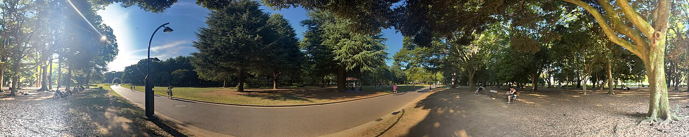
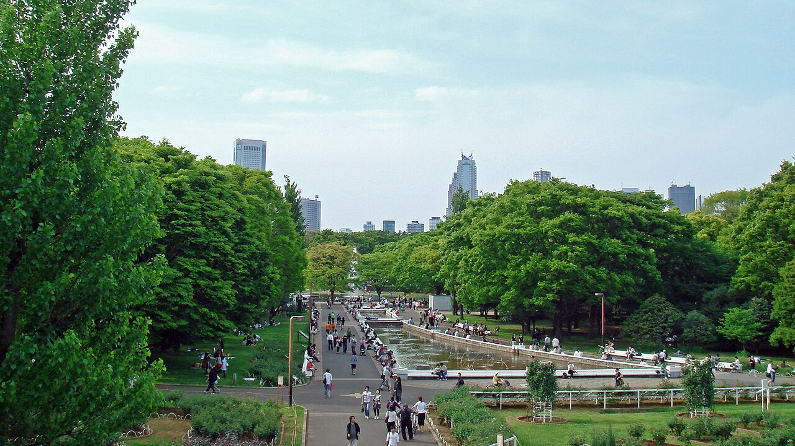
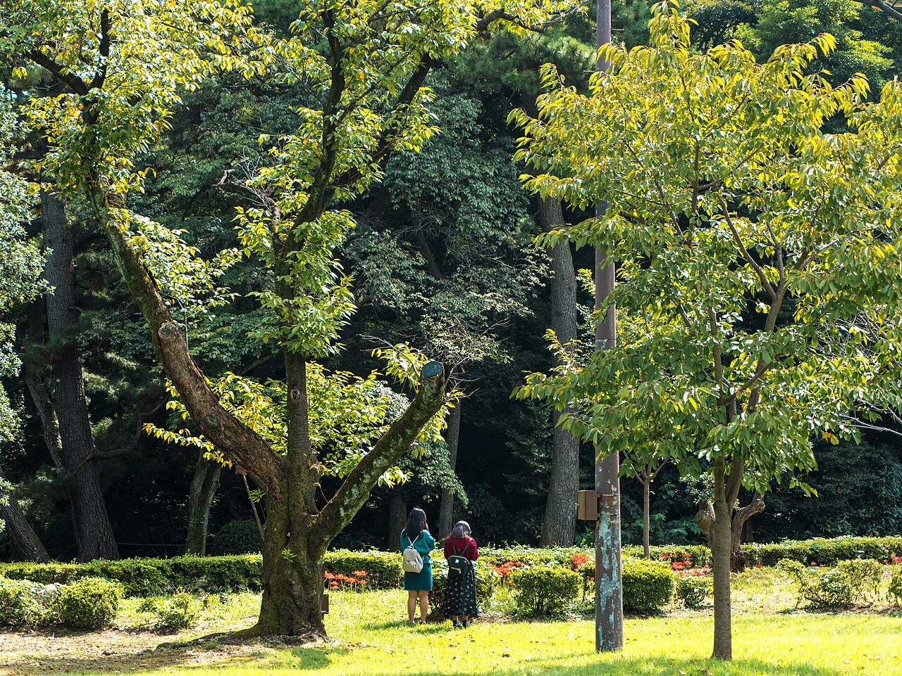
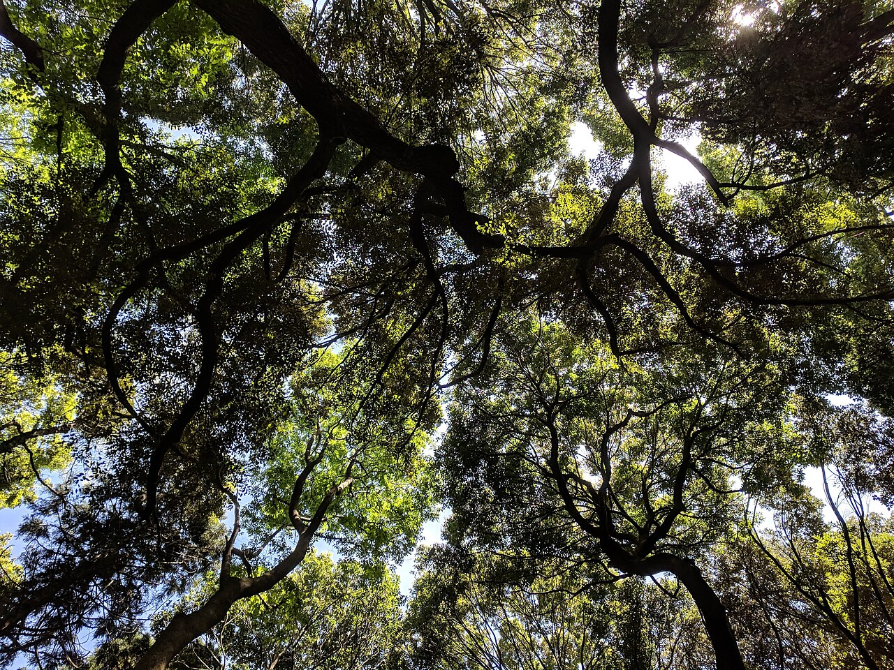
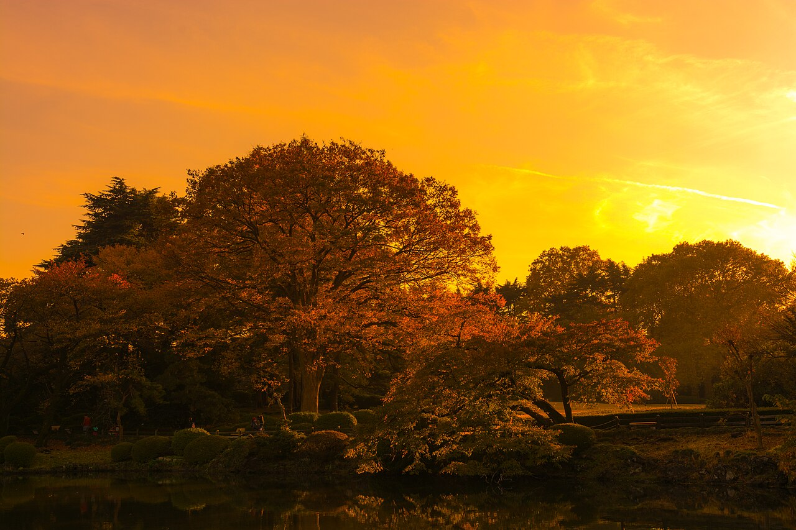
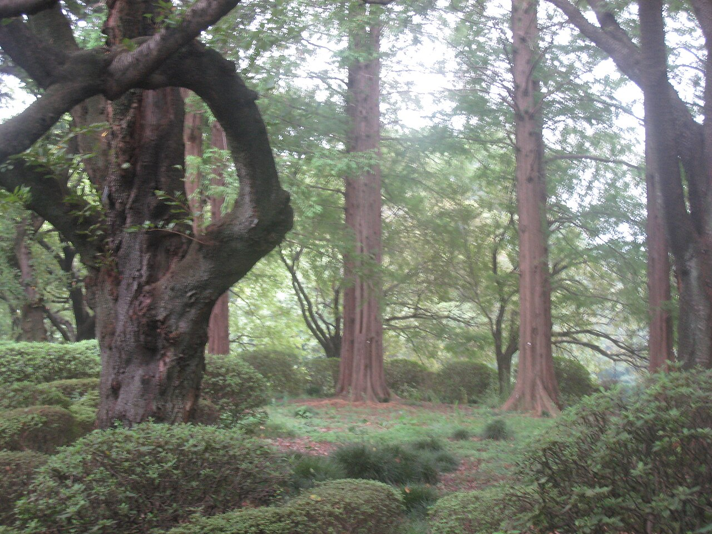
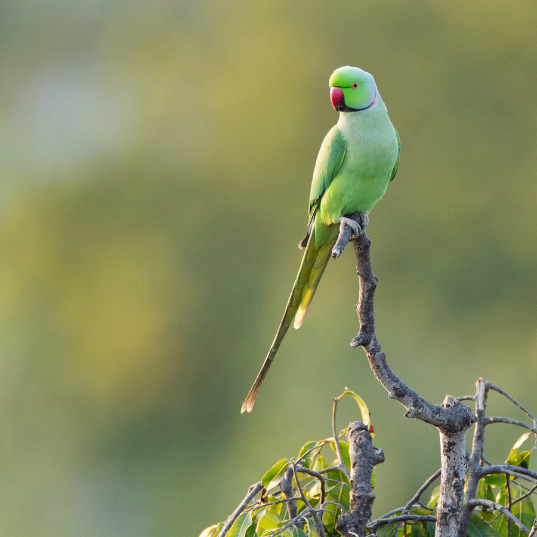
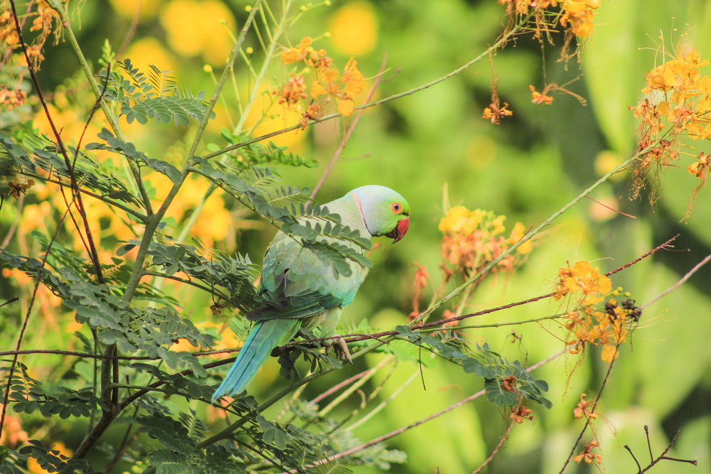
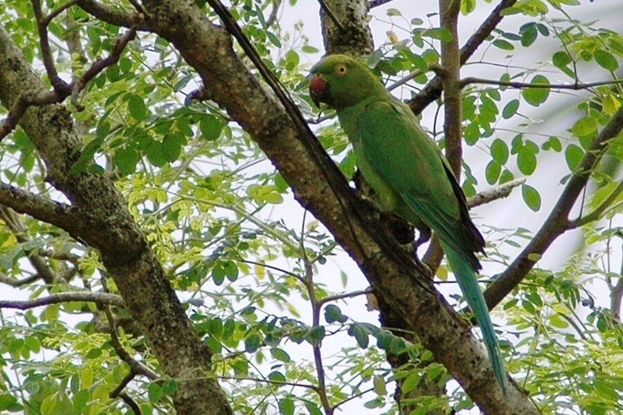
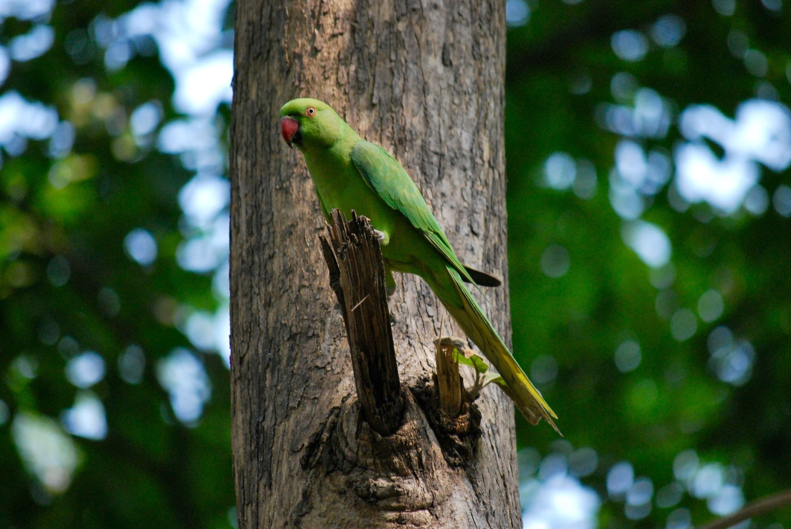

木々に囲まれた公園のイメージここは「見る」カフェではなく、公園の一部にあるカフェです。囲いのないテラス席だから、木々の様子も、遊びに来るインコたちも、すぐそばに感じられます。
林試の森公園の木立に囲まれたオープンテラス。天気のいい日は公園の風と鳥の声に包まれて過ごせます。
このあたりには野生化したワカケホンセイインコの群れがすみついています。約束はできませんが、テラス席や木の枝に姿を見せてくれることも。
厳選豆のコーヒーと季節のスイーツをご用意。散歩や公園遊びの帰りに、ふらっと立ち寄れる一杯を。
当店がある林試の森公園は、かつての林業試験場の跡地。都内でも珍しい大木や珍しい樹種が多く、都会にいながら深呼吸したくなる景色がひろがります。（写真は雰囲気をお伝えするイメージです）





この公園には、野生化したワカケホンセイインコの群れがすみついています。運がよければ、コーヒーを飲んでいるテラスのすぐそばまで舞い降りてくれることも。
飼っているわけではなく、公園にすむ野生の子たち。スタッフや常連さんが見分けやすいように、勝手にニックネームを付けています。

開店直後に真っ先に現れる一羽。よく通る鳴き声で来店を知らせてくれます。

新しいお客様が気になるようで、テラス席の近くまで様子を見に来ます。

一番大きな声で鳴く古株。他の子より高い枝から見下ろしていることが多いです。

まだ警戒心が強く、少し離れた木の上から様子をうかがっています。そっと見守ってあげてください。
※ 野生の鳥のため、必ず会えるわけではありません。天候や季節によって姿を見せない日もあります。
ここは公園にすむ野生のインコたちの生活圏でもあります。無理のない距離感でお付き合いください。
野生の鳥のため、無理に近づいたり捕まえようとしたりしないでください。
フラッシュや大きな音は鳥が驚いて逃げてしまう原因になります。
屋外の性質上、目を離した隙に食べ物を狙われることがあります。
与えてよいのは指定のバードシードのみ。人の食事は与えないでください。
屋外テラス営業のため、荒天時は臨時休業する場合があります。最新情報はSNSでご確認ください。